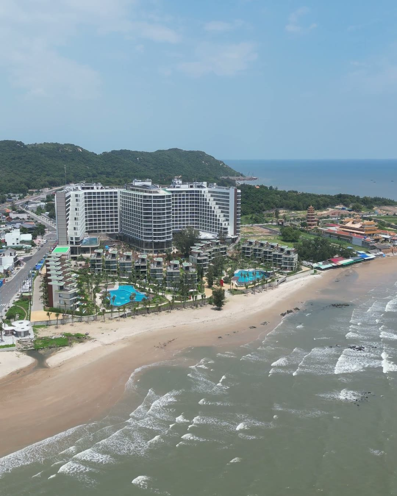
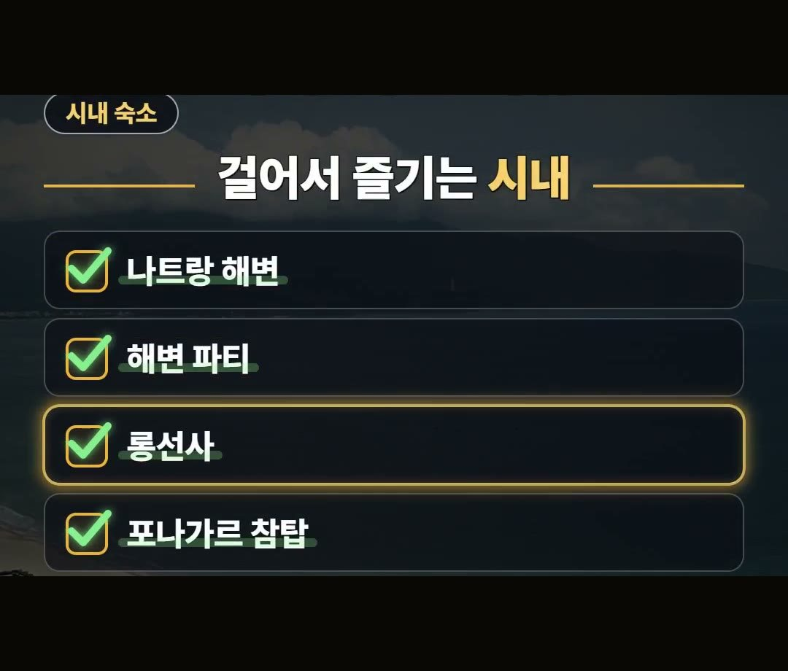
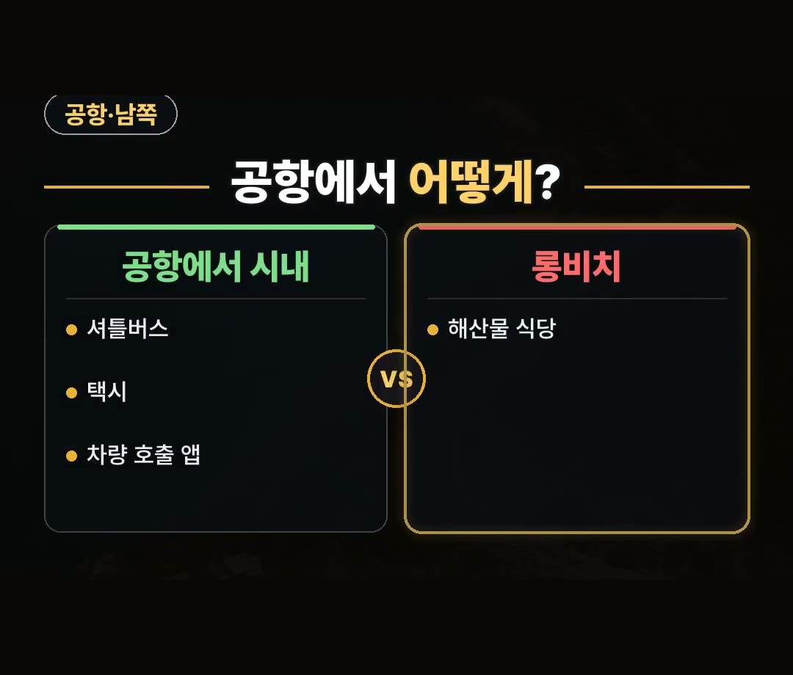
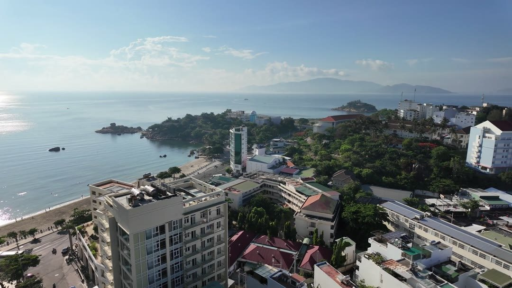
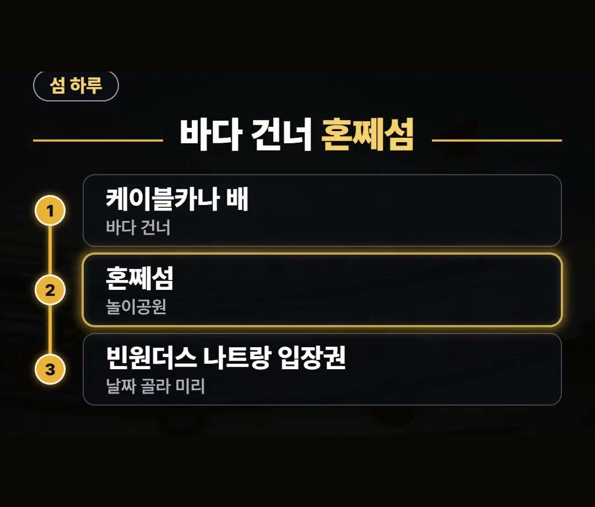
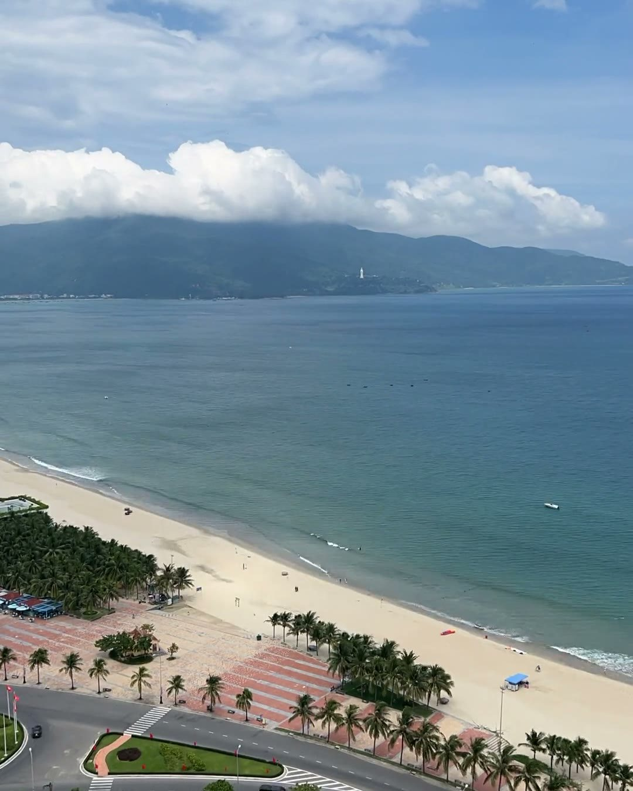

나트랑 리조트, 시내·깜란·섬 중 어디에 잡을까 — 동네별 동선 정리
※ 이 글에는 제휴 링크가 포함되어 있으며, 링크를 통해 예약·구매하시면 일정 수수료를 받을 수 있습니다. (가격은 같습니다)
※ 이 포스팅은 쿠팡 파트너스 활동의 일환으로, 이에 따른 일정액의 수수료를 제공받습니다.
나트랑 리조트를 고르는데 사진은 다 좋아 보여서 어디로 정해야 할지 막막하신가요?
공항에 내려 숙소로 가는 차 안에서, 지도를 보며 「여기서 시내까지 매일 오갈 수 있을까?」 하고 계산하는 상황을 떠올려 보세요.
이 글에서는 나트랑 숙소가 나뉘는 세 동네와 동네별로 할 수 있는 것, 우기에 리조트 고르는 기준까지 2026년 10월 기준으로 정리했어요.
나트랑 숙소는 시내, 공항이 있는 깜란 쪽, 바다 건너 섬으로 나뉜다는 것부터 기억하세요!
그리고 9월부터 12월까지는 우기라서 리조트 안 놀거리가 많은 곳이 유리하다는 점도 같이 챙겨 두세요. 🌴

나트랑 리조트, 동네가 셋으로 나뉘어요
나트랑 숙소는 크게 세 곳으로 나뉩니다.
- 시내
- 공항이 있는 깜란 쪽
- 바다 건너 섬
공항은 시내 남쪽에 있어요.
그래서 리조트를 어디에 잡느냐에 따라 공항 가는 길, 시내 구경 가는 길, 섬에 건너가는 길이 모두 달라집니다.
수영장이나 객실 사진을 보기 전에, 이 세 동네 가운데 어디에 머물지부터 정해 두면 일정을 짜기가 한결 쉬워요.

나트랑 리조트 순위보다 먼저, 여행 방식부터
리조트 순위를 이것저것 찾아보기 전에, 이번 여행에서 무엇을 가장 많이 하고 싶은지부터 적어 보세요.
- 먹고 걷는 여행이 좋다면 시내
- 공항과 가까운 쪽이 좋다면 공항이 있는 깜란 쪽
- 놀이공원에서 하루를 보내고 싶다면 섬
같은 나트랑 여행이라도 어디서 자느냐에 따라 매일 이동하는 길이 달라질 수 있어요.
하고 싶은 일이 모여 있는 동네에 숙소를 잡는 것이 출발점입니다.
시내 숙소 — 해변·명소와 공항 가는 길
시내에 머물면 낮과 밤을 모두 가까이에서 즐길 수 있어요.
낮에는 나트랑 해변, 밤에는 해변 파티가 이어집니다.
시내에서 둘러보기 좋은 곳은 이렇습니다.
- 나트랑 해변
- 해변 파티
- 롱선사
- 포나가르 참탑
베트남 관광청 안내를 보면 롱선사에는 높이 솟은 큰 불상이 있고, 포나가르 참탑은 수백 년 된 탑이에요.
먹고 걷는 여행을 좋아한다면 시내 숙소가 잘 맞아요.

공항에서 시내까지는 이런 방법으로 갑니다.
- 셔틀버스
- 택시
- 차량 호출 앱
시내 남쪽 롱비치에는 해산물 식당이 모여 있어요.
여행 중 저녁 한 끼를 해산물로 먹고 싶다면 롱비치 쪽을 일정에 넣어 보세요.


섬에서 보내는 하루 — 빈원더스와 섬 투어
놀이공원은 바다 건너 혼쩨섬에 있어요.
케이블카나 배로 건너갑니다.
- 케이블카나 배로 바다 건너기
- 혼쩨섬 놀이공원
- 빈원더스 나트랑 입장권은 날짜를 골라 미리 사기
케이블카 점검 기간에는 배가 대신 다닐 수 있으니, 가기 전에 운행 안내를 한 번 확인해 두세요.
섬을 더 돌고 싶다면 하루 투어로 혼문섬, 원숭이섬 같은 작은 섬을 둘러볼 수 있어요.
시내 북쪽에는 머드 온천도 있습니다.

9월부터 12월은 우기, 리조트 고르는 기준이 달라져요
나트랑은 9월부터 12월까지가 우기예요.
이 시기에 간다면 리조트 안 놀거리가 많은 곳이 유리합니다.
비 때문에 밖에 나가기 어려운 날에도 숙소 안에서 시간을 보낼 수 있기 때문이에요.
현지에서 지도나 차량 호출 앱을 쓰려면 데이터가 있어야 하니, 이심은 출발 전에 미리 준비해 두세요.

정리
- 나트랑 리조트는 시내, 공항이 있는 깜란 쪽, 바다 건너 섬 가운데 어디에 잡을지부터 정하세요.
- 시내는 나트랑 해변·롱선사·포나가르 참탑, 섬은 빈원더스 나트랑, 공항에서 시내는 셔틀버스·택시·차량 호출 앱이에요.
- 9월부터 12월까지는 우기라서 리조트 안 놀거리가 많은 곳이 유리합니다.
여러분은 시내와 섬 가운데 어느 쪽에 더 끌리세요?
예약 링크는 아래에 모아 두었어요.
지금 쓸 수 있는 여행사 할인
- 📶 해외 데이터는 이심으로 미리 · 마이리얼트립 마이심 「베트남 50% 1,200원~」 · 2개 이상 추가 할인 (마이심 화면 표시 기준 · 10/5 확인 · 값은 바뀔 수 있음)
※ 여행사 사정으로 조건이 바뀌거나 일찍 끝날 수 있어요. 예약 전에 여행사 화면에서 한 번 더 확인하세요. (2026-10-05 확인)
📘 무료 여행 가이드 전자책 모음 보기 (오사카 · 후쿠오카 · 타이베이 · 도쿄 · 일본겨울) ›
📌 2026년 10월 기준 정보예요. 가격은 환율·시기에 따라 달라질 수 있어요.
영상 화면: Pexels (Bùi Hoàng Long, Hữu Thịnh 79, Kate Branch, Milan Vaghasia, Nguyễn Trường An Official, Quang Vuong)
사진: Pexels (quang vinh)